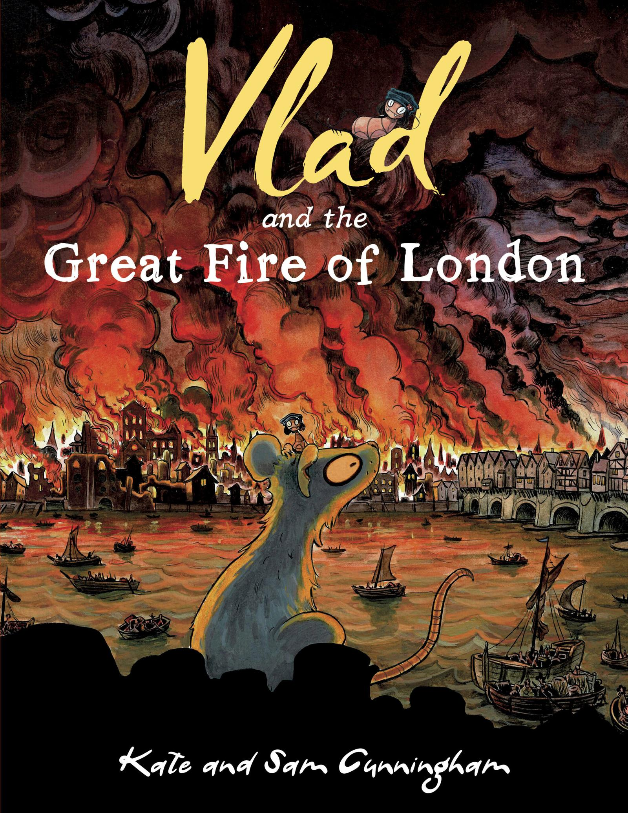
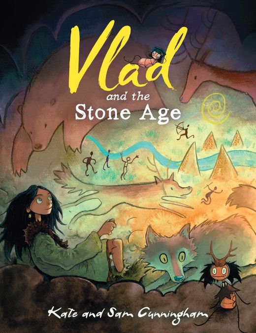
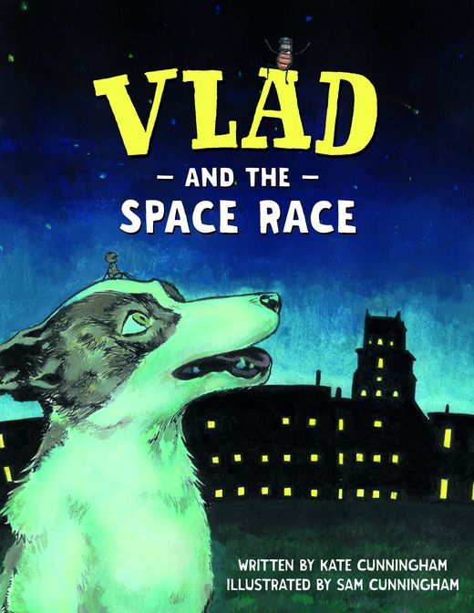
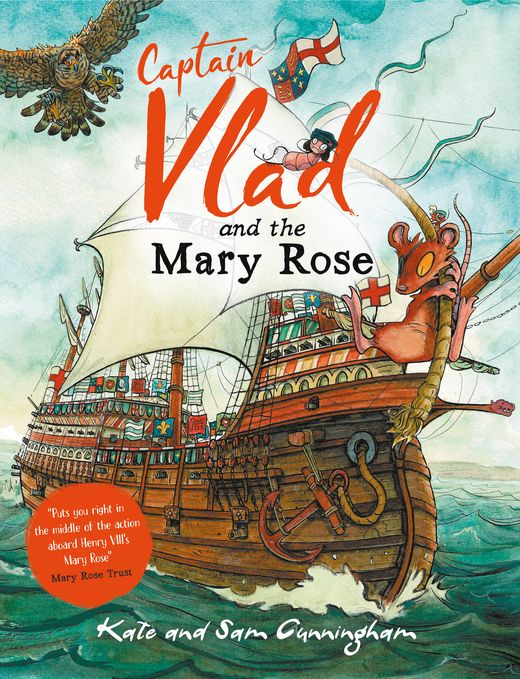
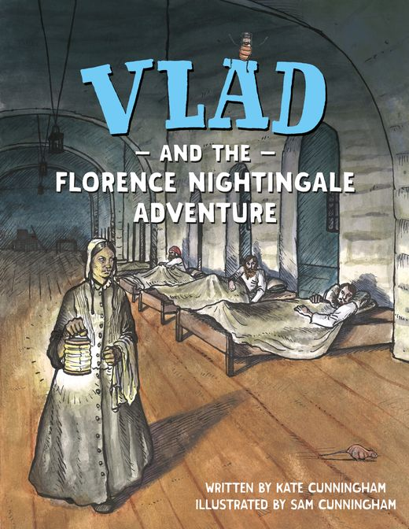
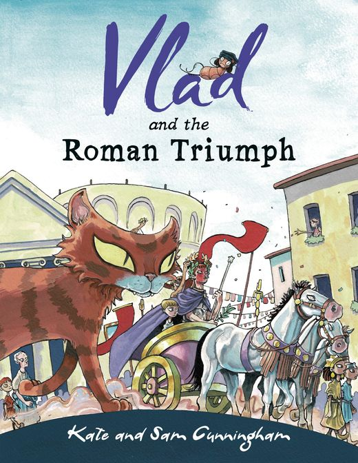
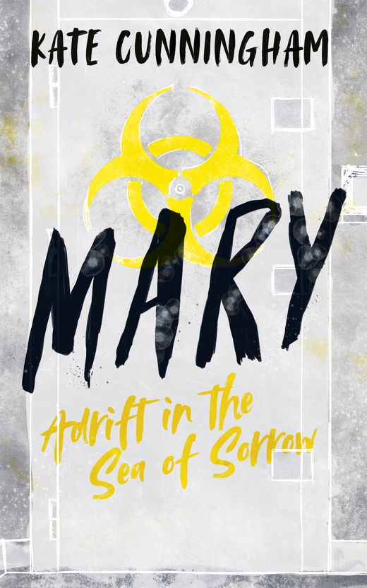

A Flea in Historyby Kate Cunningham, illustrated by Sam Cunningham
Vlad the flea has been to the Great Fire, the Mary Rose, the Stone Age and space. Sam's pictures show how things really looked.

A flea's eye view of history
Adventure stories with a bit of stealth-learning sneaked in. Each book follows Vlad and his animal friends through a real moment in history, and Captain Vlad was drawn using the Mary Rose's own artefacts and research.

11,300 years agoVlad and the Stone Age
£9.99 from the shop
RomeVlad and the Roman Triumph
See the series
1545Captain Vlad and the Mary Rose
£9.99 from the shop- 1666
Vlad and the Great Fire of London
Buy from the shop 
1854Vlad and the Florence Nightingale Adventure
See the series
1957Vlad and the Space Race
See the series
Also in the series: Vlad and the First World War and Vlad and Tutankhamun's Tomb. The audiobooks are read by Emma Hixson as Vlad, with a question and answer session between Vlad and Kate at the end.

For older readers
Mary: Adrift in the Sea of Sorrow, from The Pathogen Project, and Benji and the Gunpowder Plot, from Time Tumblers.
Kate comes to school, often in a kirtle
Kate was a primary school teacher for nine years before she wrote the first Vlad book in 2016. Her visits, in person or online, are built around the curriculum: the history, how we know about it, and how the writing children do in class is the same work that goes into publishing a book.
Every visit comes with free linked teaching resources and signed books at a discount.
"Kate's Great Fire of London talk was absolutely fantastic. She had our children completely captivated from the start."A teacher, on the Reading Riddle school visits page
Where Vlad turns up
History festivals, museums and bookshops.
- York Roman FestivalNext to the Yorkshire Museum, 23 and 24 May 2026.
- The Mary Rose MuseumCaptain Vlad launched there on 1 April 2024.
- Festival of ArchaeologyThe closing event in Greenwich Park.
- Kemps Books, MaltonAn in-store visit on 26 July 2023.
- The Thames foreshoreKate holds a Port of London mudlarking licence.